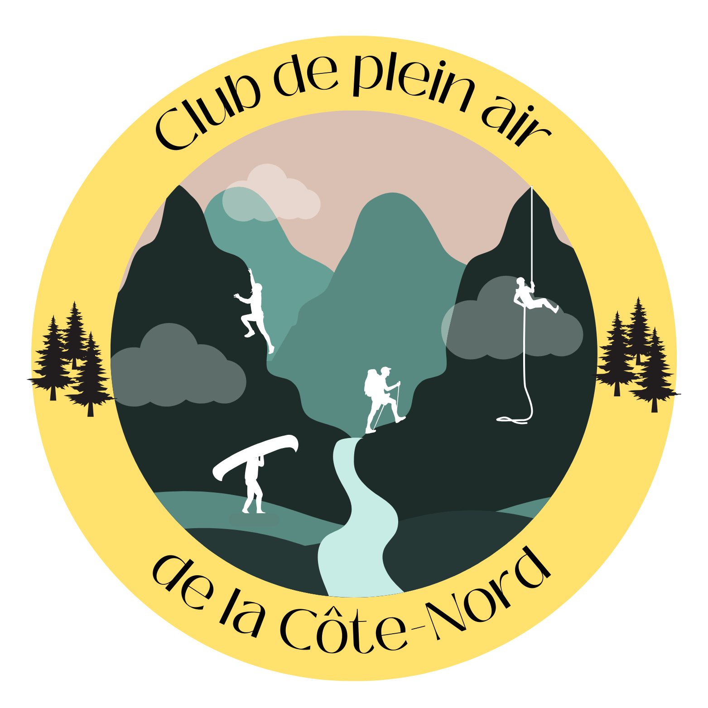

Club de plein air de la Côte-Nord
OSBL dédié à la nature et à la découverte des trésors de la Côte-Nord par le biais de l'activité physique.
Le Club rassemble les adeptes de plein air et d'aventure en offrant des sorties encadrées tout au long de l'année, que ce soit pour une première expérience ou repousser ses limites: randonnées, excursions saisonnières et initiation à l'escalade de roche ou de glace, souvent organisées en partenariat avec d'autres organisations locales.
Animé·e·s par le désir de faire découvrir et préserver nos milieux naturels, nous développons, entretenons et mettons en valeur des sites de pratique en collaboration avec les acteurs engagés envers le territoire nord-côtier.
Bref…
Nous sommes un groupe de bénévoles bien motivé·e·s à prendre soin de notre territoire… et toujours partant·e·s pour aller jouer dehors, beau temps, mauvais temps!